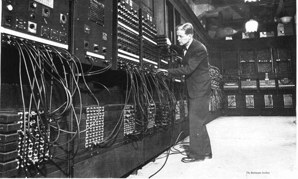
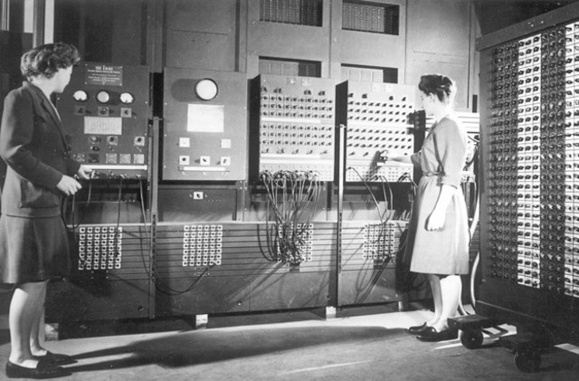
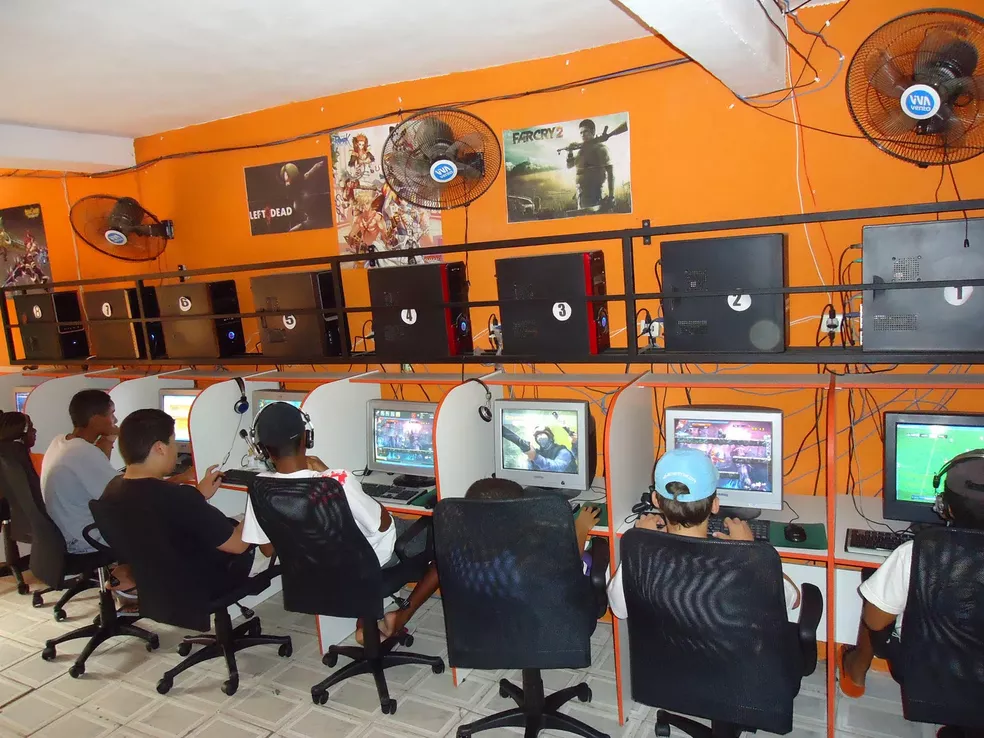

História da internet
A história da internet remonta às décadas de 1960 e 1970, quando pesquisadores e cientistas começaram a explorar
a ideia de conectar computadores em uma rede global. O objetivo era criar uma rede de comunicação que permitisse
o compartilhamento de informações e recursos entre diferentes instituições acadêmicas e militares.


Em 1969, o precursor da internet moderna foi criado nos Estados Unidos,
chamado ARPANET (Advanced Research Projects Agency Network), financiado pela ARPA
(Agência de Projetos de Pesquisa Avançada). O ARPANET conectou quatro universidades
e permitiu a troca de dados entre elas. A ideia central era criar uma rede robusta que
pudesse sobreviver a falhas e ser escalável,Nos anos seguintes, a ARPANET se expandiu e mais instituições foram adicionadas
à rede. A tecnologia de transmissão de dados por pacotes, conhecida como TCP/IP
(Transmission Control Protocol/Internet Protocol), foi desenvolvida para permitir a comunicação
entre diferentes tipos de computadores.

Em 1983, o TCP/IP foi adotado como o padrão de comunicação da ARPANET e outras redes,
unificando a infraestrutura e permitindo a interconexão de diversas redes em uma
grande rede, conhecida como "Internet".
A partir da década de 1990, com o desenvolvimento da World Wide Web (WWW) por Tim Berners-Lee,
a internet começou a se popularizar e se tornar acessível para o público em geral.
A WWW introduziu o conceito de hipertexto, permitindo a criação de páginas da web interconectadas
por meio de links.
Com o tempo, a internet cresceu exponencialmente, conectando pessoas ao redor do mundo, transformando
a maneira como nos comunicamos, consumimos informações, fazemos negócios e interagimos socialmente.
Novos serviços e tecnologias surgiram, como e-mail, mecanismos de busca, mídias sociais, comércio eletrônico e streaming de mídia.
Atualmente, a internet é uma infraestrutura global vital, utilizada por bilhões de pessoas diariamente. Ela continua a evoluir e se expandir, impulsionada pela inovação tecnológica, fornecendo oportunidades e desafios em diversos campos, como educação, entretenimento, saúde, ciência, economia e muito mais.